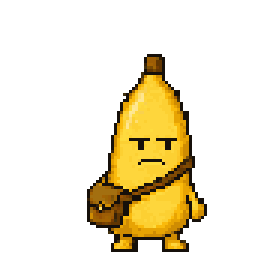

the desktop companion
your banana, on your mac.
the desktop companion puts your banana on your mac screen while you work. click it and a new entry opens, and what you journal there goes into the same journal as your phone.
this is version 1.0.1.
it comes with both plans and needs the phone app, and it keeps itself up to date. it's signed and checked by apple, so it opens like any other app.

how to connect it.
- install
install skriblio from the download and open it. your banana appears at the bottom of your screen, next to a box for a code.
- a code on the phone
in the app, open the 'you' tab, tap 'desktop companion', then 'make a code'. the code is six characters long and works for ten minutes.
- type it once
type the code into the box on your computer and they're connected. from then on the banana on your screen knows when you've journaled, the same as the one on your phone.
what's new in 1.0.1.
- push your pointer against the right edge of the screen, or click the banana and 'journal', and a slim panel slides out to journal in. it leaves when you move away.
- your banana jumps onto the panel when you open it to write.
- one button opens the panel as a window in the middle of the screen for longer writing, and puts it back at the edge.
- 'not now' sends your banana off until tomorrow morning, in one click.
a day with it.
- it opens by itself when your computer starts, and a minute or two later it walks onto the screen. you can turn that off from its icon in the menu bar.
- it walks about, climbs onto your windows and peeks out from behind them. you can pick it up and put it somewhere else, or throw it. it keeps still while you're in a call, and at night it takes a nap.
- click it and a small card opens with today's prompt, a 'journal' button and a 'not now' button. 'journal' opens a cream window with a prompt to start from, and what you journal there goes into the same journal as your phone.
- 'not now' sends it off the screen, and it comes back in about an hour.
- once you've journaled, it dances in a burst of confetti and stays around in a good mood for the rest of the day. when your journal goes quiet for a few days, your banana gets up to things on your screen too.
try it here.
needs
- macos12 or later
- chipapple silicon or intel
- signingsigned by steady labs and checked by apple, so it opens like any other app.
what it won't do
- it makes no sound, and it never shows a badge or a red dot.
- your journal and your old entries never appear on the computer.
- windows are only shapes to it, so it knows where they sit but never what's in them, and nothing it sees leaves your computer.
there's a windows version too, an early build that isn't signed yet, and it connects to your phone the same way.